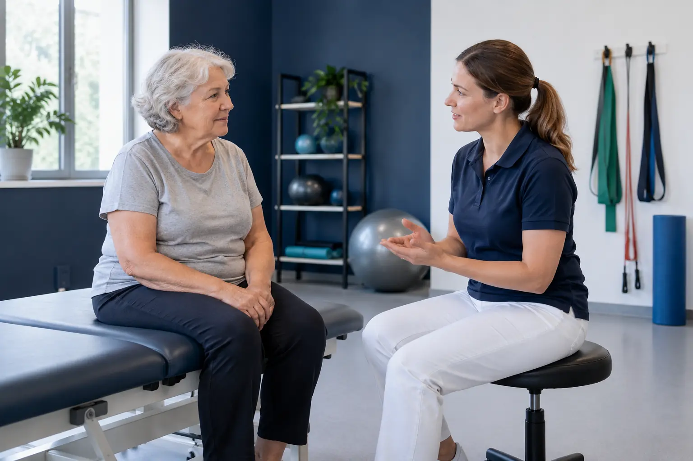

Kineziterapija: konsultacija, individualus darbas ir grupinis užsiėmimas
Autorius: Madbeauty redakcija · Numatyta 2026 m. lapkričio 5 d. 16:00 (Lietuvos laiku)
Sužinokite, kuo skiriasi kineziterapijos konsultacija, individualus darbas ir grupinis užsiėmimas, ką verta palyginti ir kodėl vien paslaugos pavadinimas neatskleidžia jos apimties.

Kineziterapijos konsultacija, individualus darbas ir grupinis užsiėmimas apibūdina skirtingus paslaugos aspektus. Konsultacija nusako vizito paskirtį – aptarti situaciją ir įvertinti poreikį; individualus ar grupinis darbas nusako, kaip vyksta užsiėmimas. Todėl konsultacija gali vykti individualiai, o vien pavadinimas nepasako, kas įeina į konkretų pasiūlymą.
Konsultacija: įvertinimas ir paslaugos apimtis
Konsultacijos metu gali būti aptariamas žmogaus tikslas ir aktuali informacija, vertinamas judėjimas ar kasdienė funkcija, o tada paaiškinama galima darbo kryptis. Ar į konsultaciją įeina ir praktinis užsiėmimas, priklauso nuo konkretaus pasiūlymo. NHS kineziterapijos aprašas pateikia įvertinimą ir galimus darbo būdus kaip skirtingas paslaugos dalis; tai nėra vienodas kiekvieno vizito scenarijus.
Individualus ir grupinis darbas
Individuali kineziterapija reiškia darbą vienam dalyviui su specialistu. Grupiniame užsiėmime dalyvauja keli žmonės. Šie pavadinimai savaime nepasako, kokie vertinimo, judėjimo ar kiti praktiniai elementai įtraukti, kaip jie pritaikomi skirtingiems dalyviams ar kokia yra specialisto priežiūra.
- Konsultacija: išsiaiškinkite, ar vizitas skirtas įvertinimui ir plano aptarimui, ar įeina ir praktinis darbas.
- Individualus užsiėmimas: palyginkite, kokie veiksmai įtraukti ir kaip aptariamas jų pritaikymas konkrečiam žmogui.
- Grupinis užsiėmimas: pasitikrinkite, kam jis skirtas, kaip vyksta priežiūra ir ką specialistas daro, jei dalyvių poreikiai skiriasi.
Kineziterapija nėra vien poilsio masažo pavadinimas
Kineziterapijos paslaugoje gali būti naudojami skirtingi darbo būdai, įskaitant judėjimo užduotis ar manualines technikas. Todėl vien tai, kad pasiūlyme minimas masažas ar darbas rankomis, neatskleidžia nei viso paslaugos tikslo, nei apimties. Lyginkite, ar apraše aiškiai nurodyta paslaugos paskirtis, specialisto atliekamas įvertinimas ir numatomas darbo formatas.
Kaip palyginti pasiūlymus
Pirmiausia nuspręskite, ko ieškote: konsultacijos, individualaus užsiėmimo ar grupės. Tada tikrinkite, kas įeina į vizitą, kam jis skirtas ir kaip aprašyta specialisto priežiūra. Pavyzdžiui, jei vienas pasiūlymas vadinamas konsultacija, o kitas – grupiniu užsiėmimu, pavadinimų nepakanka palyginimui: svarbu sužinoti, ar pirmasis apima tik įvertinimą, o antrajame – kaip sprendžiami skirtingi dalyvių poreikiai. Tai palyginimo pavyzdys, o ne individuali rekomendacija.
Jei tai asmens sveikatos priežiūros paslauga, tikrinkite ir įstaigos, ir specialisto licenciją, jos apimtį bei paslaugos teikimo vietą. Tai nurodo Valstybinė akreditavimo sveikatos priežiūros veiklai tarnyba; šis patikrinimas netaikomas automatiškai kiekvienai kosmetinei ar sveikatingumo paslaugai.
Jei naudojatės paslaugų katalogu, pirmiausia pasirinkite konkrečią paslaugos grupę ar formatą, o miestą nurodykite atskirai. Miesto pasirinkimas nusako paieškos vietą, bet pats savaime nepatvirtina teikėjo, laisvo laiko ar rezervacijos galimybės.
Šaltiniai
- NHS · kineziterapijos paskirtis ir vizitas · www.nhs.uk
- VASPVT · sveikatos paslaugų teisėtumo patikra · vaspvt.lrv.lt